ELEMENTARIA
Khám phá thế giới Elementaria, nơi bạn làm chủ 4 nguyên tố Lửa, Nước, Đá, Khí để chiến đấu chống lại các khối đá nguyên tố hỗn loạn. Chuyển đổi linh hoạt để sống sót!
KHÁM PHÁ CÁC TÍNH NĂNGKhám phá thế giới Elementaria, nơi bạn làm chủ 4 nguyên tố Lửa, Nước, Đá, Khí để chiến đấu chống lại các khối đá nguyên tố hỗn loạn. Chuyển đổi linh hoạt để sống sót!
KHÁM PHÁ CÁC TÍNH NĂNGSử dụng Input Keyboard và Button. Xử lý trạng thái bị đánh bằng biến Hit Time để ngăn di chuyển.
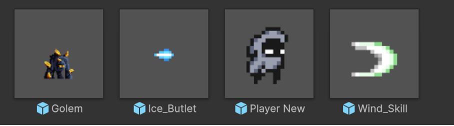
Dùng biến Type (Int) và Switch để quy định 5 hình dạng nhân vật với chỉ số và chức năng khác nhau.
Menu chọn nhân vật khi ấn Q. Sau khi chọn sẽ có thời gian Cooldown để ngăn chuyển đổi liên tục.
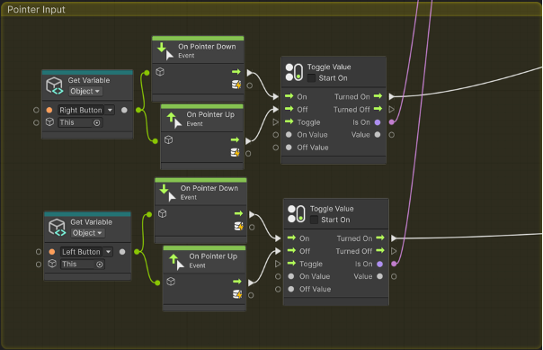
Sử dụng Node Slider và có logic giữ tỉ lệ phần trăm máu khi chuyển đổi giữa các dạng có Max Heath khác nhau.
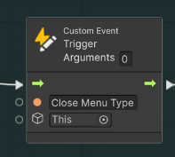Player hồi máu sau 5s không nhận sát thương và máu thấp hơn Max Heath. Event Hit sẽ reset Cooldown này.
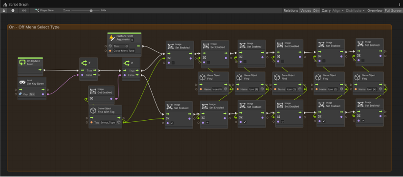 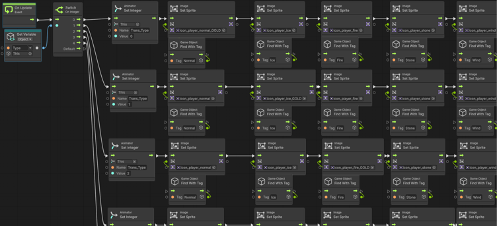
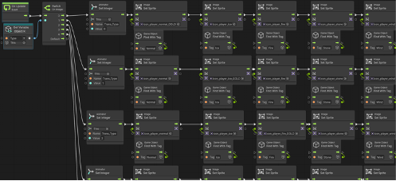
Kích hoạt Animation Death và hiện menu GameOver khi máu $\le 0$ hoặc rơi xuống vực (Y $\le -12$).
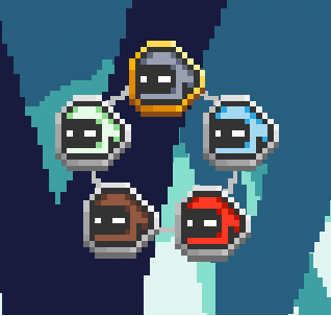 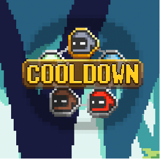 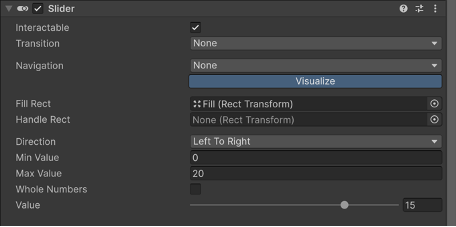Xử lý va chạm với môi trường Lava/Water. Phải ở đúng dạng nguyên tố (VD: Fire với Lava) để không bị mất máu.
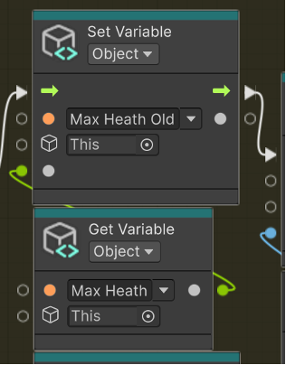 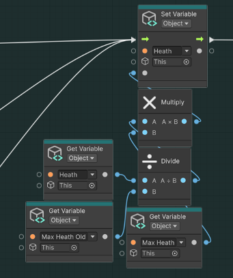 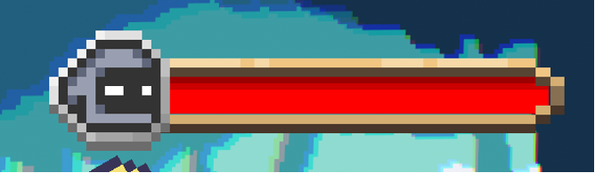 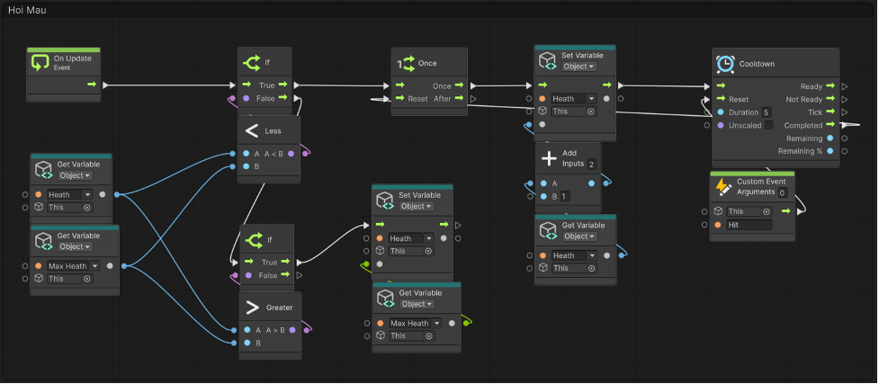Sử dụng Camera Mode Perspective và sắp xếp Layer Map theo trục Z để tạo cảm giác không gian chân thực.
Sử dụng Trigger Hitbox vùng tấn công, gây hiệu ứng cháy và nockback (đẩy lùi) đối thủ.
Băng làm chậm (1), Khí giảm trọng lực/hất tung (1,2), Đá tăng chỉ số (3), Hồi chiêu (1,4).
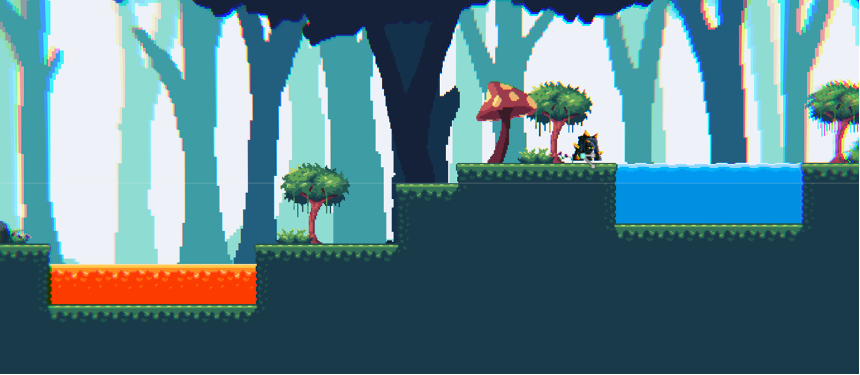 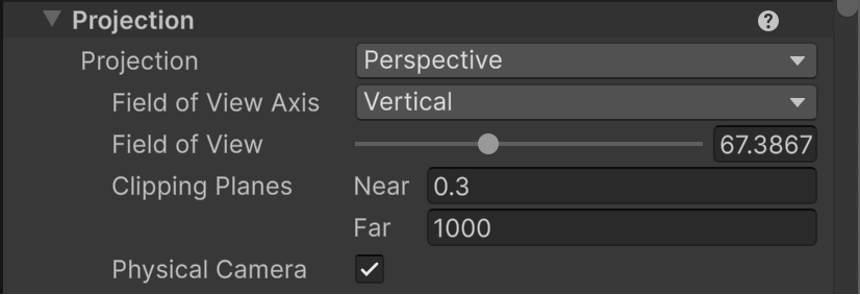 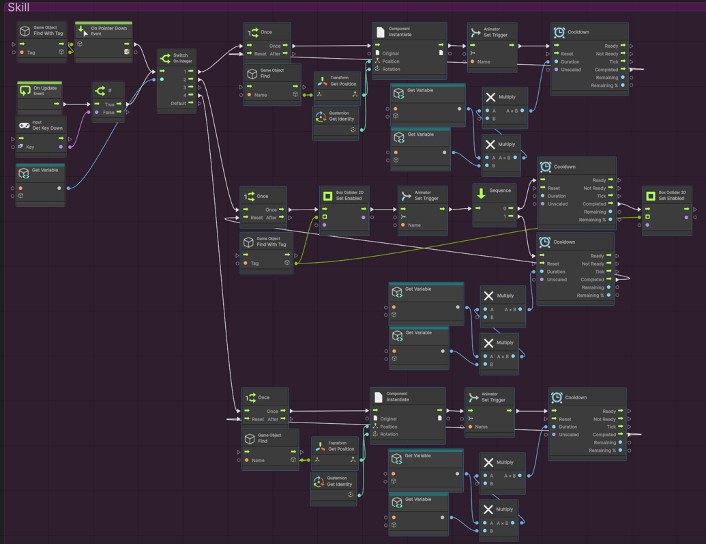
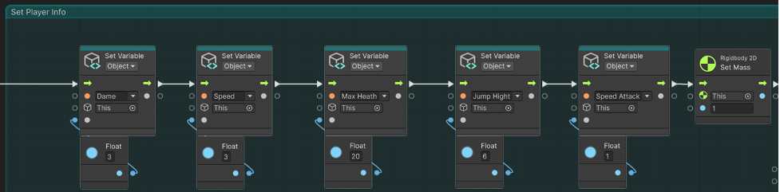
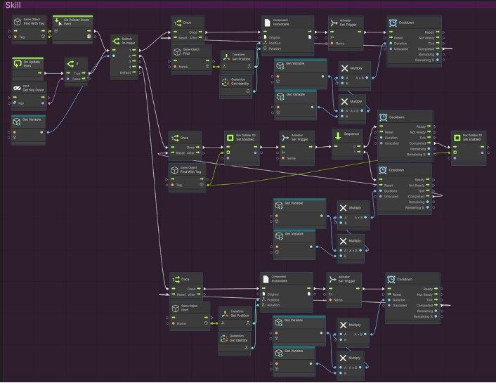
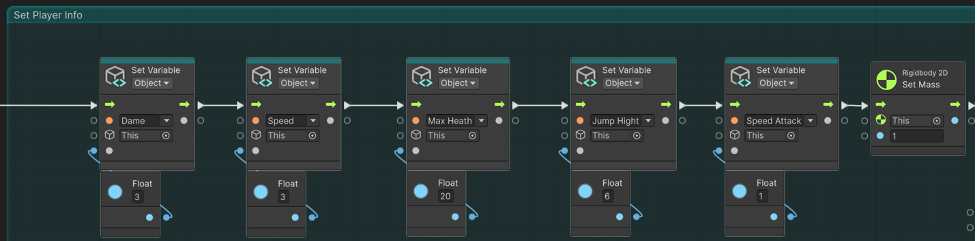
Sử dụng Volume với Bloom và Chromatic Aberration để tạo hiệu ứng ánh sáng và độ sâu trường ảnh.
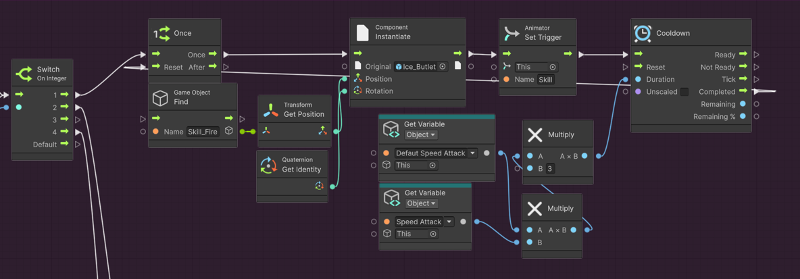 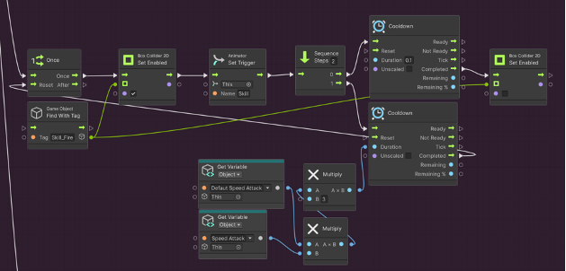 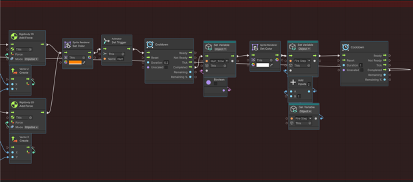Thanh máu chuyển màu cam sau khi nhận sát thương và quay về màu đỏ sau 0.5s.
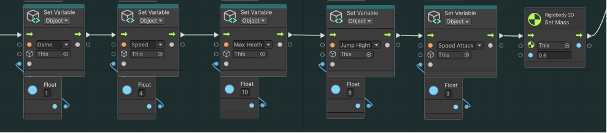 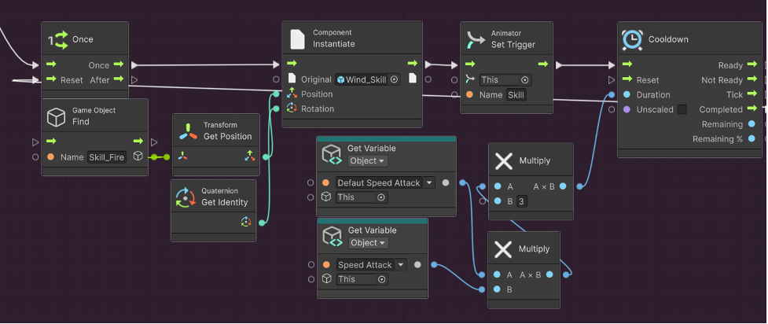Sử dụng biến Coin (INT). Sau khi Player kill Enemy sẽ thêm 1 điểm vào Coin và cập nhật Text điểm trên UI.
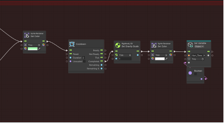 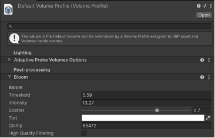Sử dụng biến **Right** để xác định hướng tấn công và dùng Node **Add Force** để đẩy lùi đối tượng bị tấn công theo hướng chính xác.
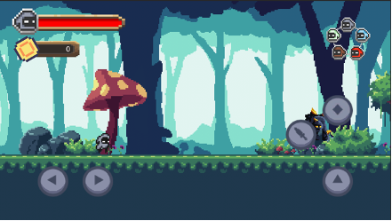 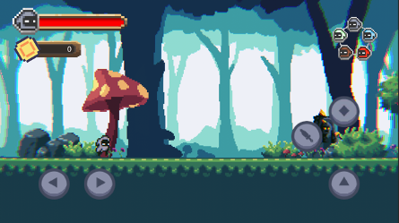 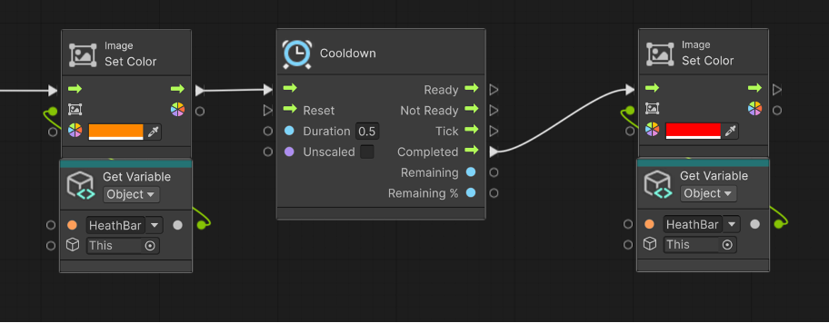 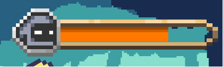Kiểm tra khi người dùng ấn key ESC thì sẽ chạy lệnh ẩn tất cả UI trên màn hình.
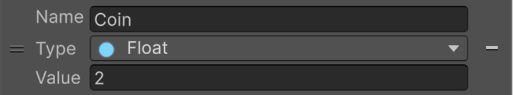Khi Player va chạm với vật gắn tag là Door sẽ hiện màn hình Win và load scene về Menu sau 2s.